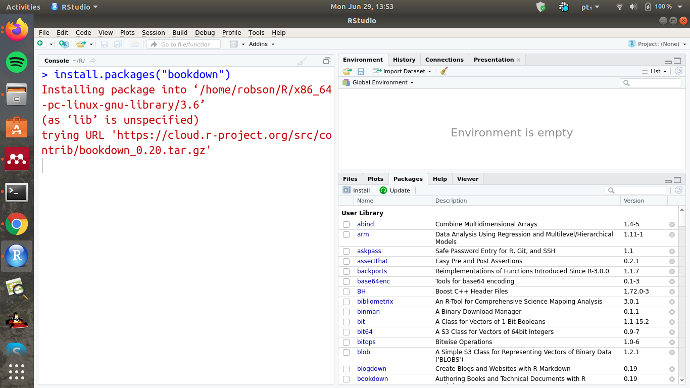

Treinamento Bookdown
2020-08-12
Capítulo 1 Pré-requisitos
Este documento foi elaborado a partir da estrutura mínima obtida pelo template do Bookdown disponível no ambiente do Rstudio.
Este é um sample da escrita em Markdown. É possível utilizar qualquer recurso que suportado pelo Markdown do Pandoc, como a equação \[f(x) = \frac{1}{\sigma\sqrt{2\pi}}\exp\left(-\frac{1}{2}\left(\frac{x-\mu}{\sigma}\right)^2\right)\].
A instalação do bookdown package pode instalado pelo CRAN ou Github. A seguir apresentamos uma sequência de passos de instalação pelo modo gráfico. Se você tem familiaridade pule a sequência de figuras e instale utilizando os comandos na aba Console, caso contrário siga os seguintes passos:
- Primeiro é necessário abrir o Rstudio,
Opção de instalação pelo modo gráfico
- Selecoine a aba de instalação Packages e clique em install,
Selecoinar aba de instalação Packages - Click em install
- No ambiente de busca da interface instalação pesquise por bookdown, selecione o pacote e clique em install,
Pesquisar por bookdown e clicar em install
Finalmente, o código será instalado, 
Ainda é necessário carregá-lo na seção de uso, novamente na aba Packages pesquise por bookdown e selecione o pacote, o que será suficiente para carregá-lo,
Carregar a biblioteca bookdown na aba Package
install.packages("bookdown")
# or the development version
# devtools::install_github("rstudio/bookdown")
library("bookdown")Deve-se lembrar que para cada arquivo .Rmd
só pode ter um capítulo sendo definido pelo primeiro nível
por #.
Para compilar este exemplo para PDF, é necessário o pacote XeLaTeX. É recomendável instalar o TinyTeX (que inclui o XeLaTeX): https://yihui.org/tinytex/.
Nos próximos capítulos serão apresentados outros detalhes sobre instalação e configuração.